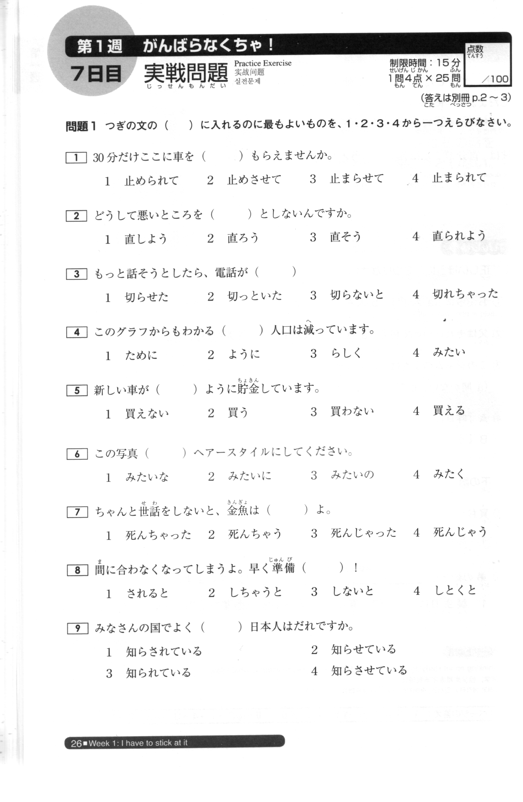

📖 JLPT N3 問題バンク 実戦問題レビュー
総まとめ N3 文法 ＆ 過去問 (2022.7 / 2023.7 / 2023.12 / 2024.7)
総問題数:
963
問
総まとめ(150問) ＋ 過去問・実戦問題10回分(729問) ＋ 文の組み立て過去問集(84問)
不備・要確認:
0件 (100% 検証済)

総まとめ 第1週 (25問)
総まとめ 第2週 (25問)
総まとめ 第3週 (25問)
総まとめ 第4週 (25問)
総まとめ 第5週 (25問)
総まとめ 第6週 (25問)
2018.12 語彙 (35問)
2018.12 文法 (23問)
2018.12 読解 (16問)
2019.12 語彙 (35問)
2019.12 文法 (23問)
2019.12 読解 (14問)
2020.12 語彙 (35問)
2020.12 文法 (22問)
2020.12 読解 (16問)
2021.7 語彙 (35問)
2021.7 文法 (22問)
2021.7 読解 (16問)
2022.7 語彙 (34問)
2022.7 文法 (22問)
2022.7 読解 (16問)
2023.7 語彙 (35問)
2023.7 文法 (22問)
2023.7 読解 (16問)
2023.12 語彙 (35問)
2023.12 文法 (22問)
2023.12 読解 (16問)
2024.7 語彙 (35問)
2024.7 文法 (22問)
2024.7 読解 (16問)
2025.7 語彙 (35問)
2025.7 文法 (22問)
2025.7 読解 (16問)
2025.12 語彙 (35問)
2025.12 文法 (22問)
2025.12 読解 (16問)
★ 文の組み立て (84問)